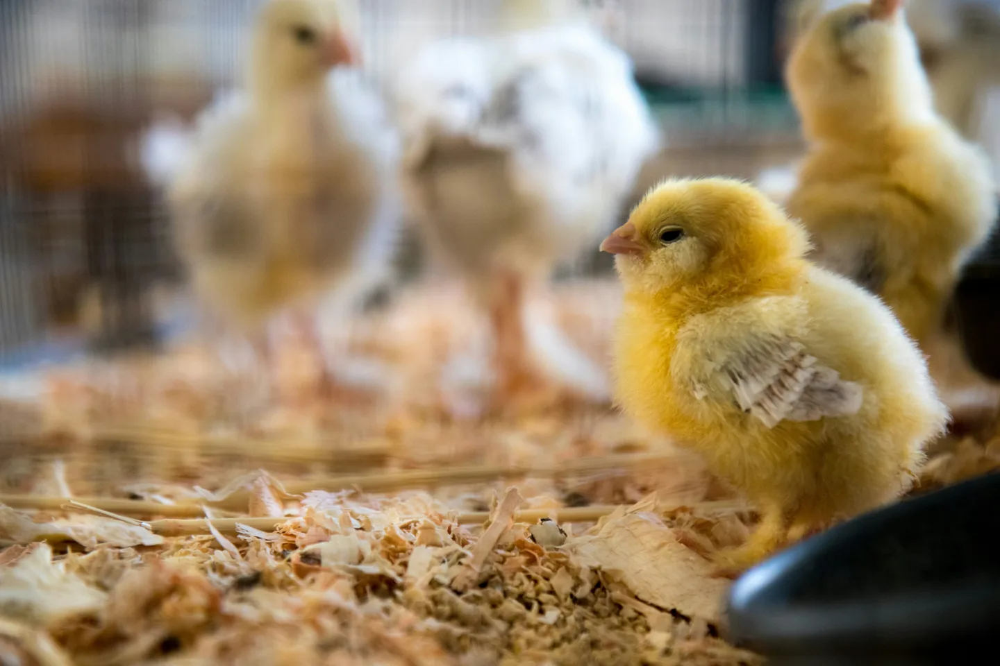

養雞小記｜幸好我不是經濟動物
最近開始在雞舍工作。提到雞舍，大家想到的可能是「蛋雞」，進而想到籠飼議題。
但我工作的雞舍是養殖白肉雞，最常見、容易想像的就是炸雞的那種雞肉。原則上養殖天數是35天，就可長到2公斤左右重。成長速度之所以可以很快，是育種的結果，而不是打了生長激素等等的錯誤謠言（真的沒有打）；不過也因為成長速度很快，也會有「骨架撐不起雞肉（是事實）」的動物福利相關討論。
雞舍環境是平飼，也就是在一個平面養殖，沒有棲架設施、也沒有籠子，地上會鋪滿厚厚的稻穀（好像也可以鋪木屑）。封閉式的環境，靠著風扇、水簾、噴霧通風降溫，加溫機升溫。
第一週是死亡高峰。
病菌感染、眼睛異常（未開眼，難以自行找到水跟飼料吃）、活動力差（無法走動，推他一下才勉強走兩步）、瘸腳（活動力受限），以及即使還算能跑能吃，但生長速度跟不上整體。
剛開始或許看起來還跟大家一樣，但隨著日子一天一天地過、體型差距拉大時，跟不上大家，意味著水與飼料等資源取得可能遭排擠而加大成長差距，而且還會遭受霸凌（雞群有明顯的階級關係）。
巡舍時，一邊撿拾失去生命的（還會看到其他雞隻踩過去），一邊觀察有無行為異常的，一邊想著：
「我是屬於哪一種呢？我會不會是先天帶有缺陷的？我會不會是生長速度跟不上的？我會不會在某個時候被淘汰呢？」
